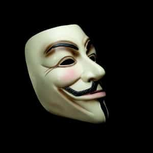

< < < Back
Is The Anonymous Hacker Collective Promoting Dangerous Cyber Fascism? – Return Of Kings
Anonymous again finds themselves in news headlines. This time they are targeting none other than The Donald. This internet “hacktivist” group has known to target police and supposed members of the KKK; whom today is anyone who dares to dissent anything that does not fit the grand statist, leftist, or Marxist narrative.

Anonymous is usually present at every statist or leftist protest.
According to Wikipedia, the group Anonymous:
…has no strictly defined philosophy, and internal dissent is a regular feature of the group. A website associated with the group describes it as “an Internet gathering” with “a very loose and decentralized command structure that operates on ideas rather than directives
However, the group’s actions totally contradict the above statement. Anonymous has an extremely defined philosophy and group mentality, especially in recent years that completely “operates on directives.” They were a clear presence at Occupy Wall Street. They also cyber attacked many police stations before due process was completed on the cases.
The group functions on the whims of the mass media and large government. One would go as far as to speculate that large government and media might fund Anonymous. Though a minor threat, the group also deems who is allowed to have the “right” ideas and the “wrong” ideas, as in the most recent incident with Trump illustrates.

Anonymous deems which individuals are allotted free speech and who are not allowed to exercise free speech. They serve their own brand of justice with force. They decide who is guilty of “incorrect thought.” The group has their own revision of the US constitution, to replace the “outdated” US Constitution. This new constitution is “more in line with modern times.”
If you did not know by now, the new constitution for “modern times” is the Communist Manifesto. Grown men in masks somehow feel that they know far better about political philosophy then the founding fathers, and are acting as cyber henchmen for the leftist and Marxist narrative. They are what you could call a totalitarian internet organization or “cyber totalitarians.”
This organization recently has become even more politically ideological in their hacking. At first, Anonymous was far more loosely based and relied on pranks (much like the merry pranksters of the 60s). Now, as the left has risen among nerds and the herds, they base their targets along strict political ideologies. They back the large federal government and big media in nearly all decisions of who are the “enemies of the state.”
They bully, threaten, and cause cyber injury to anyone who does not embrace their “perfect” ideology. This is the equivalent of using physical harm toward someone they may disagree with. Though they claim to support freedom of speech and are “pro-democracy,” their activities illustrate otherwise. If you do not agree with them, they will attack. They are the thought police and, historically speaking, represent the modern day cyber descendants of KGB men and SS officers.

In light of many Anonymous attacks, individuals speaking out and dissenting on issues may apply self-censorship in fear they may be targets of these cyber persecutions (bank accounts hacked, personal data manipulated, etc.). This limits free thought and free speech out of fear. These “hacktivists” are nothing more than the thought police, dictating what may or may not be discussed or investigated in our modern world.
The irony here is that they claim their fascist actions as an attack against fascism. Let us take for instance their recent attack on Donald Trump. Regardless of whether you agree with Trump’s speech on Muslims, he has the right to speak under our First Amendment and individuals also have the right to support him under our system of democracy (I do not need to debate his large base of support).
However, fascist Anonymous is causing cyber harm to men that exercised their first amendment rights and garnered democratic support. This is because Anonymous knows more than you at what you should think and do. They know more than you on what should be discussed. They know because they are the only ones with the “right” ideas. You have been warned of what to think.
Orwell made a great statement about such “fascism”:
…almost any English person would accept ‘bully’ as a synonym for ‘Fascist’. That is about as near to a definition as this much-abused word has come.
In the eyes of Anonymous, individuals are not protected by freedom of speech under the constitution nor laws, but should rather be dictated and pressured by cyber violence and an unruly mob into what they deem as “correct thought”. In the end, they are nothing more than the bullies that they claim to fight against.
Read More: This Accidental Experiment Shows The Superiority Of Patriarchy


{kind=link}